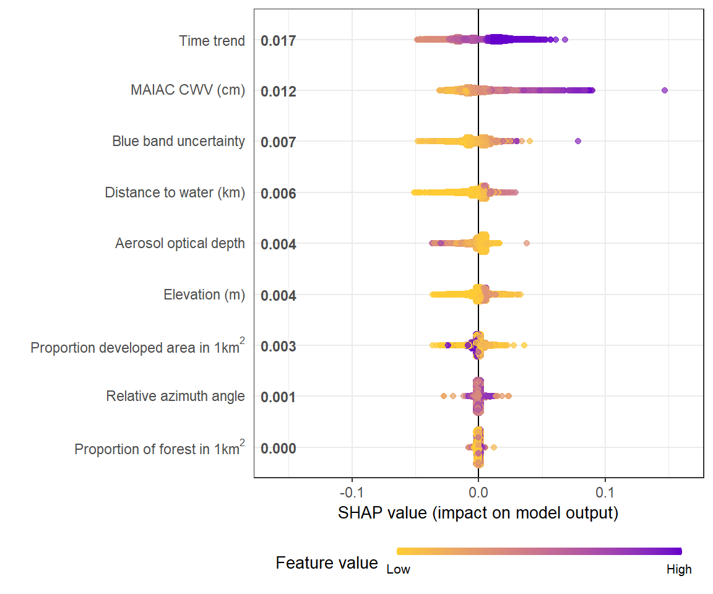

SHAP for XGBoost in R: SHAPforxgboost
The SHAPforxgboost package
I wrote the R package SHAPforxgboost to collect the plotting functions illustrated in this post. This page works as a vignette-style guide to the package.
Please install from CRAN or GitHub.
install.packages("SHAPforxgboost")
# or
devtools::install_github("liuyanguu/SHAPforxgboost")Why SHAP values
SHAP’s main advantages are local explanation and consistency in global model structure.
Tree-based machine learning models, including random forest, gradient boosted trees, and XGBoost, are among the most widely used nonlinear models. SHAP (SHapley Additive exPlanations) values provide a principled way to interpret tree-based model results. They are based on Shapley values from game theory and explain feature importance through each feature’s marginal contribution to the model outcome.
This GitHub page explains the Python package developed by Scott Lundberg. Here we show all the visualizations in R. The xgboost::xgb.shap.plot function can also make simple dependence plot.
Local explanation
# run the model with built-in data
suppressPackageStartupMessages({
library("SHAPforxgboost"); library("ggplot2"); library("xgboost")
library("data.table"); library("here")
})
y_var <- "diffcwv"
dataX <- as.matrix(dataXY_df[,-..y_var])
# hyperparameter tuning results
param_list <- list(objective = "reg:squarederror", # For regression
eta = 0.02,
max_depth = 10,
gamma = 0.01,
subsample = 0.95
)
mod <- xgboost::xgboost(data = dataX,
label = as.matrix(dataXY_df[[y_var]]),
params = param_list, nrounds = 10,
verbose = FALSE, nthread = parallel::detectCores() - 2,
early_stopping_rounds = 8)
# To return the SHAP values and ranked features by mean|SHAP|
shap_values <- shap.values(xgb_model = mod, X_train = dataX)
# The ranked features by mean |SHAP|
shap_values$mean_shap_score## dayint Column_WV AOT_Uncertainty dist_water_km aod
## 0.0165331533 0.0115615699 0.0073583570 0.0057172670 0.0039983764
## elev DevAll_P1km RelAZ forestProp_1km
## 0.0037026883 0.0025215052 0.0009489252 0.0003197501
SHAP values are calculated for each cell in the training dataset. The SHAP values dataset (shap_values\(shap_score</code>) has the same dimensions (10148, 9) as the independent-variable matrix used to fit the XGBoost model.</p>
<p>The sum of each row’s SHAP values (plus the <strong>BIAS</strong> column, which is like an intercept) is the predicted model output. As in the following table of SHAP values, <code>rowSum</code> equals the output <code>predict(xgb_mod)</code>. I.e., the explanation’s attribution values sum up to the model output (last column in the table below). This is the case in this example, but not so if you are running e.g. 5-fold cross-validation.</p>
<pre class="r"><code># to show that `rowSum` is the output:
shap_data <- copy(shap_values\)shap_score) shap_data[, BIAS := shap_values\(BIAS0]
pred_mod <- predict(mod, dataX, ntreelimit = 10)
shap_data[, `:=`(rowSum = round(rowSums(shap_data),6), pred_mod = round(pred_mod,6))]
rmarkdown::paged_table(shap_data[1:20,])</code></pre>
<div data-pagedtable="false">
<script data-pagedtable-source type="application/json">
{"columns":[{"label":["dayint"],"name":[1],"type":["dbl"],"align":["right"]},{"label":["Column_WV"],"name":[2],"type":["dbl"],"align":["right"]},{"label":["AOT_Uncertainty"],"name":[3],"type":["dbl"],"align":["right"]},{"label":["elev"],"name":[4],"type":["dbl"],"align":["right"]},{"label":["aod"],"name":[5],"type":["dbl"],"align":["right"]},{"label":["RelAZ"],"name":[6],"type":["dbl"],"align":["right"]},{"label":["DevAll_P1km"],"name":[7],"type":["dbl"],"align":["right"]},{"label":["dist_water_km"],"name":[8],"type":["dbl"],"align":["right"]},{"label":["forestProp_1km"],"name":[9],"type":["dbl"],"align":["right"]},{"label":["BIAS"],"name":[10],"type":["dbl"],"align":["right"]},{"label":["rowSum"],"name":[11],"type":["dbl"],"align":["right"]},{"label":["pred_mod"],"name":[12],"type":["dbl"],"align":["right"]}],"data":[{"1":"-0.02557905","2":"-0.0005755072","3":"-0.0098052761","4":"0.0073726904","5":"-0.0107722692","6":"-0.0004805907","7":"-1.117577e-03","8":"0.0061048246","9":"1.844858e-04","10":"0.4174739","11":"0.382806","12":"0.382806"},{"1":"-0.02483972","2":"-0.0034067584","3":"-0.0115150800","4":"-0.0035686186","5":"-0.0270973835","6":"-0.0015936509","7":"-3.331856e-03","8":"-0.0167273134","9":"-1.723413e-04","10":"0.4174739","11":"0.325221","12":"0.325221"},{"1":"-0.03413666","2":"-0.0007374412","3":"-0.0007180684","4":"-0.0026140946","5":"-0.0095058009","6":"-0.0005366615","7":"1.963652e-03","8":"0.0022106667","9":"8.728726e-05","10":"0.4174739","11":"0.373487","12":"0.373487"},{"1":"-0.03434632","2":"-0.0045883073","3":"-0.0191144440","4":"-0.0030631854","5":"-0.0205219947","6":"-0.0014030929","7":"1.436443e-03","8":"-0.0157566406","9":"2.180699e-04","10":"0.4174739","11":"0.320334","12":"0.320334"},{"1":"-0.01832963","2":"-0.0086402912","3":"0.0026233871","4":"0.0027268552","5":"0.0005017931","6":"-0.0003358831","7":"-2.013395e-04","8":"0.0014244873","9":"1.215334e-04","10":"0.4174739","11":"0.397365","12":"0.397365"},{"1":"-0.01772710","2":"-0.0005145757","3":"0.0013348022","4":"-0.0009447359","5":"0.0020042206","6":"-0.0003174599","7":"1.110274e-03","8":"-0.0021392661","9":"3.686000e-04","10":"0.4174739","11":"0.400649","12":"0.400649"},{"1":"-0.02023106","2":"-0.0050968509","3":"0.0011314561","4":"-0.0023222903","5":"0.0015982637","6":"-0.0002370200","7":"7.947011e-04","8":"-0.0014749069","9":"1.047513e-04","10":"0.4174739","11":"0.391741","12":"0.391741"},{"1":"-0.01525974","2":"-0.0045129582","3":"-0.0061629983","4":"0.0025710966","5":"0.0043358626","6":"-0.0003244348","7":"-3.078676e-05","8":"0.0015471068","9":"1.140457e-04","10":"0.4174739","11":"0.399751","12":"0.399751"},{"1":"-0.01445252","2":"0.0030874913","3":"-0.0059410208","4":"-0.0007819544","5":"0.0038836361","6":"-0.0003378282","7":"-1.861672e-04","8":"-0.0041062119","9":"1.649890e-05","10":"0.4174739","11":"0.398656","12":"0.398656"},{"1":"-0.01511972","2":"0.0004664771","3":"-0.0062720692","4":"-0.0001698038","5":"0.0042251395","6":"-0.0002849138","7":"8.402658e-04","8":"-0.0026890752","9":"1.856266e-04","10":"0.4174739","11":"0.398656","12":"0.398656"},{"1":"-0.01533287","2":"0.0007446357","3":"-0.0061498899","4":"0.0004168376","5":"0.0022613860","6":"-0.0002848775","7":"8.296125e-04","8":"-0.0028650968","9":"1.859436e-04","10":"0.4174739","11":"0.397280","12":"0.397280"},{"1":"-0.01604510","2":"-0.0032839011","3":"-0.0051546735","4":"-0.0004067498","5":"0.0034330199","6":"-0.0003226944","7":"7.105558e-04","8":"-0.0009660273","9":"5.508904e-05","10":"0.4174739","11":"0.395493","12":"0.395493"},{"1":"-0.01883645","2":"-0.0084283454","3":"0.0017651436","4":"0.0027960844","5":"0.0016753853","6":"-0.0002863287","7":"-1.818746e-04","8":"0.0012689425","9":"1.183508e-04","10":"0.4174739","11":"0.397365","12":"0.397365"},{"1":"-0.01770927","2":"-0.0017823400","3":"0.0018962277","4":"-0.0006375462","5":"0.0019486732","6":"-0.0002957275","7":"1.191899e-03","8":"-0.0018049469","9":"3.677855e-04","10":"0.4174739","11":"0.400649","12":"0.400649"},{"1":"-0.02038937","2":"-0.0065577431","3":"0.0035359780","4":"-0.0032310234","5":"0.0020057550","6":"-0.0003128728","7":"5.236075e-04","8":"-0.0014238193","9":"1.165268e-04","10":"0.4174739","11":"0.391741","12":"0.391741"},{"1":"-0.02046929","2":"0.0107371798","3":"-0.0026274007","4":"-0.0038221127","5":"-0.0123990234","6":"-0.0009247615","7":"-1.167993e-03","8":"-0.0033206309","9":"-7.913404e-05","10":"0.4174739","11":"0.383401","12":"0.383401"},{"1":"-0.01582124","2":"-0.0002622633","3":"-0.0052699968","4":"-0.0005557226","5":"0.0043615745","6":"-0.0002625712","7":"3.951869e-04","8":"-0.0029743179","9":"1.950321e-04","10":"0.4174739","11":"0.397280","12":"0.397280"},{"1":"-0.01715348","2":"-0.0044425409","3":"-0.0022627416","4":"-0.0016017534","5":"0.0038209974","6":"-0.0002851978","7":"6.857596e-04","8":"-0.0008376217","9":"9.609586e-05","10":"0.4174739","11":"0.395493","12":"0.395493"},{"1":"-0.01578710","2":"-0.0063197329","3":"-0.0039092759","4":"0.0023183986","5":"0.0028014842","6":"-0.0002928231","7":"-3.439377e-04","8":"0.0014018872","9":"1.287550e-04","10":"0.4174739","11":"0.397472","12":"0.397472"},{"1":"-0.01740243","2":"-0.0023277157","3":"0.0043687141","4":"-0.0035607964","5":"0.0043153968","6":"-0.0003133073","7":"-1.636773e-04","8":"-0.0016290097","9":"-1.124185e-04","10":"0.4174739","11":"0.400649","12":"0.400649"}],"options":{"columns":{"min":{},"max":[10]},"rows":{"min":[10],"max":[10]},"pages":{}}}
</script>
</div>
<p>This offers model explanation for each observation in the dataset. And offers lots of flexibility when summarizing the whole model.</p>
</div>
<div id="consistency-in-global-feature-importance" class="section level2">
<h2>Consistency in global feature importance</h2>
<p><strong>And why feature importance by Gain is inconsistent</strong></p>
<p>Consistency means it is legitimate to compare feature importance across different models. When we modify the model to make a feature more important, the feature importance should increase. The paper used the following example:</p>
<p><img src="2019-07-18-visualization-of-shap-for-xgboost_files/SHAPsuppfig2.JPG" />
<em>paper 2, <a href="https://arxiv.org/abs/1905.04610">S. Lundberg 2019 arXiv:1905.04610</a></em></p>
<p>Use the dataset of Model A above as a simple example, which feature goes <strong>first</strong> into the dataset generates <strong>opposite</strong> feature importance by Gain: whichever goes later (lower in the tree) gets more credit. Notice below the feature importance from <code>xgb.importance</code> were flipped.</p>
<pre class="r"><code>library(xgboost)
d <- data.table::as.data.table(cbind(Fever = c(0,0,1,1), Cough = c(0,1,0,1), y = c(0,0,0,80)))
knitr::kable(d)</code></pre>
<table>
<thead>
<tr class="header">
<th align="right">Fever</th>
<th align="right">Cough</th>
<th align="right">y</th>
</tr>
</thead>
<tbody>
<tr class="odd">
<td align="right">0</td>
<td align="right">0</td>
<td align="right">0</td>
</tr>
<tr class="even">
<td align="right">0</td>
<td align="right">1</td>
<td align="right">0</td>
</tr>
<tr class="odd">
<td align="right">1</td>
<td align="right">0</td>
<td align="right">0</td>
</tr>
<tr class="even">
<td align="right">1</td>
<td align="right">1</td>
<td align="right">80</td>
</tr>
</tbody>
</table>
<pre class="r"><code>X1 = as.matrix(d[,.(Fever, Cough)])
X2 = as.matrix(d[,.(Cough, Fever)])
m1 = xgboost(
data = X1, label = d\)y,base_score = 0, gamma = 0, eta = 1, lambda = 0,nrounds = 1, verbose = F) m2 = xgboost( data = X2, label = d\(y,base_score = 0, gamma = 0, eta = 1, lambda = 0,nrounds = 1, verbose = F)
xgb.importance(model = m1)</code></pre>
<pre><code>## Feature Gain Cover Frequency
## 1: Cough 0.6666667 0.3333333 0.5
## 2: Fever 0.3333333 0.6666667 0.5</code></pre>
<pre class="r"><code>xgb.importance(model = m2)</code></pre>
<pre><code>## Feature Gain Cover Frequency
## 1: Fever 0.6666667 0.3333333 0.5
## 2: Cough 0.3333333 0.6666667 0.5</code></pre>
In short, the order/structure of how the tree is built doesn’t matter for SHAP, but matters for Gain, and the mean absolute SHAP is the same (20 vs. 20). The SHAP scores (SHAP.Fever, SHAP.Cough) for model <code>m1</code> and <code>m2</code>:
Model <code>m1</code>:
<div data-pagedtable="false">
<script data-pagedtable-source type="application/json">
{"columns":[{"label":["x.Fever"],"name":[1],"type":["dbl"],"align":["right"]},{"label":["x.Cough"],"name":[2],"type":["dbl"],"align":["right"]},{"label":["y.actual"],"name":[3],"type":["dbl"],"align":["right"]},{"label":["y.pred"],"name":[4],"type":["dbl"],"align":["right"]},{"label":["SHAP.Fever"],"name":[5],"type":["dbl"],"align":["right"]},{"label":["SHAP.Cough"],"name":[6],"type":["dbl"],"align":["right"]},{"label":["BIAS.BIAS"],"name":[7],"type":["dbl"],"align":["right"]}],"data":[{"1":"0","2":"0","3":"0","4":"0","5":"-10","6":"-10","7":"20"},{"1":"0","2":"1","3":"0","4":"0","5":"-30","6":"10","7":"20"},{"1":"1","2":"0","3":"0","4":"0","5":"10","6":"-30","7":"20"},{"1":"1","2":"1","3":"80","4":"80","5":"30","6":"30","7":"20"}],"options":{"columns":{"min":{},"max":[10]},"rows":{"min":[10],"max":[10]},"pages":{}}}
</script>
</div>
Model <code>m2</code>:
<div data-pagedtable="false">
<script data-pagedtable-source type="application/json">
{"columns":[{"label":["x.Cough"],"name":[1],"type":["dbl"],"align":["right"]},{"label":["x.Fever"],"name":[2],"type":["dbl"],"align":["right"]},{"label":["y.actual"],"name":[3],"type":["dbl"],"align":["right"]},{"label":["y.pred"],"name":[4],"type":["dbl"],"align":["right"]},{"label":["SHAP.Cough"],"name":[5],"type":["dbl"],"align":["right"]},{"label":["SHAP.Fever"],"name":[6],"type":["dbl"],"align":["right"]},{"label":["BIAS.BIAS"],"name":[7],"type":["dbl"],"align":["right"]}],"data":[{"1":"0","2":"0","3":"0","4":"0","5":"-10","6":"-10","7":"20"},{"1":"1","2":"0","3":"0","4":"0","5":"10","6":"-30","7":"20"},{"1":"0","2":"1","3":"0","4":"0","5":"-30","6":"10","7":"20"},{"1":"1","2":"1","3":"80","4":"80","5":"30","6":"30","7":"20"}],"options":{"columns":{"min":{},"max":[10]},"rows":{"min":[10],"max":[10]},"pages":{}}}
</script>
</div>
<p>Moreover, comparing Model B to Model A in the figure above, Model B’s output was actually revised in a way that it relies more on a given feature (Cough, output scores increased by 10), so cough should be a more important feature. While Gain still get it wrong, SHAP reflects the correct feature importance.</p>
</div>
</div>
<div id="shap-plots" class="section level1">
<h1>SHAP plots</h1>
<div id="summary-plot" class="section level2">
<h2>Summary plot</h2>
<p>The summary plot shows global feature importance. The sina plots show the distribution of feature contributions to the model output (in this example, the predictions of CWV measurement error) using SHAP values of each feature for every observation. Each dot is an observation (station-day).</p>
<pre class="r"><code># To prepare the long-format data:
shap_long <- shap.prep(xgb_model = mod, X_train = dataX)
# is the same as: using given shap_contrib
shap_long <- shap.prep(shap_contrib = shap_values\)shap_score, X_train = dataX)
# **SHAP summary plot**
shap.plot.summary(shap_long)

Alternative ways to make the same plot:
# option 1: from the xgboost model
shap.plot.summary.wrap1(model = mod, X = dataX)
# option 2: supply a self-made SHAP values dataset (e.g. sometimes as output from cross-validation)
shap.plot.summary.wrap2(shap_score = shap_values$shap_score, X = dataX)